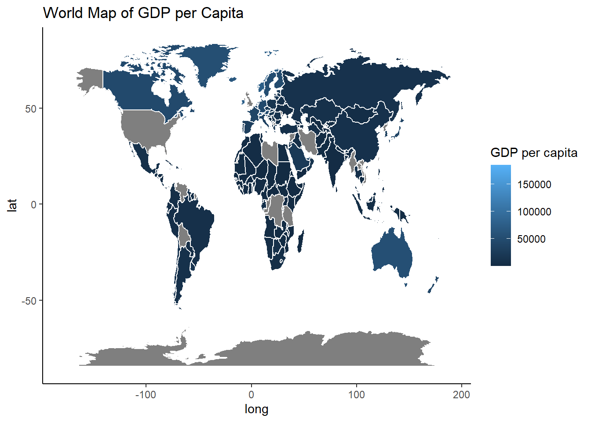

The Unfortunate reality of economic disparities
Children losing parents during the aids crisis
Introduction
In this report, we delve into the profound and often overlooked consequences of the AIDS crisis on the younger generation, particularly focusing on how economic disparities have compounded their plight. Through a series of meticulous visualizations, we will explore the cascading effects that the loss of parents to AIDS has had on children across various economic strata.
The AIDS epidemic, beyond its immediate health ramifications, has triggered a secondary crisis of orphanhood, leaving countless children vulnerable and without the familial support that is vital during formative years. Our analysis aims to illuminate the stark contrast in outcomes between children in affluent regions versus those in economically disadvantaged areas.
As we navigate through the data-driven narratives, we will uncover the interplay between economic conditions and the ability of affected children to secure basic needs, access education, and receive psychosocial support. The visual evidence presented herein not only sheds light on the past and present but also seeks to inform policy and humanitarian efforts moving forward
Visualizations
As can be seen from this scatterplot, Northern hemisphere countries such as Netherlands, France, Bulgaria, Germany, the severity of the aids crisis was much less pronounced in these areas. This is reflected in the smaller amounts of children who lost a parent in these areas. These areas had better access to antiretroviral treatments, comprehensive education and prevention programs. They also have better facilities facilities ensuring children who had lost both parents got the deserved care and assistance they needed.
This visualization displays the opposite side of the story. Aids disproportionately affects poorer countries due to limited healthcare resources and lack of sex education to help prevent it’s transmission. Countries like South Africa who had 28,620,000 children affected between 2000 & 2022 really underscores a less frequnently addressed consequence of the epidemic. It highlights how aids ravaged the most vulnerable parts of society, leaving a profound and lasting impact on the younger generation.
The reason for the display of two regression lines was to reveal the stark economic contrasts: Ireland’s GDP per capita far exceeds South Africa’s. This wealth correlates with higher life expectancies in Ireland, suggesting superior healthcare and living standards. Despite differing economies, both show a positive link between financial health and lifespan. However, variations in the data imply that other elements, including healthcare accessibility and societal issues, notably South Africa’s HIV/AIDS impact, also influence life expectancy. Understanding these graphs requires considering broader historical and social contexts beyond the economic data presented. During epidemics, the condition of a region’s economy can significantly determine its ability to cope and respond effectively. Hence why, kids in poorer regions suffered the most.
Conclusion and Recommendations
In conclusion, this report has laid bare the severe impact of the AIDS crisis on children, particularly how it has been exacerbated by economic disparity. The visualizations underscore a somber reality: in the shadow of this epidemic, a generation of children has faced compounded adversity due to the loss of parental care. The insights gleaned call for an urgent, compassionate response to address the disparities and support the resilience and recovery of these young lives. As we look ahead, let us commit to transformative actions that can rebuild the promise of a brighter future for the children who carry the silent burden of this crisis.